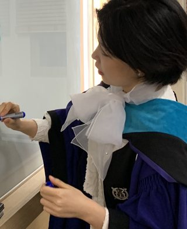
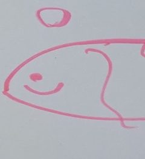
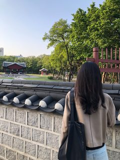

Inho Choi
최인호
Assistant Professor, Department of Political Science and Diplomacy, College of Social Sciences, Kyonggi University, South Korea
Historical East Asian international orders; Global IR and transcultural theory; Korean and Chinese political thought; the Anthropocene and planetary order
Email inho.choi86@gmail.com

Sujin Heo
허수진
PhD Candidate, School of International Service, American University
International relations theory; intellectual history; history of international law; empire; sovereignty
Jaeyoung Kim
김재영
Assistant Professor, Department of Political Science, San Diego State University
International security; Global IR; historical IR; East Asia and Korea
Email jkim33@sdsu.edu

Minju Kwon
권민주
Assistant Professor, Department of Political Science, Chapman University
International organization; international law; human rights; gender; East Asia
Inhwan Oh
오인환
Senior Research Fellow and Executive Director, East Asia Institute; Lecturer, Seoul National University
International security; U.S. foreign policy; crisis management; U.S.–China relations; status and racial hierarchy
Email ihoh@eai.or.kr
Chang Joon Ok
옥창준
Assistant Professor, Political Science, Academy of Korean Studies
Cold War history; Global IR; the history of Korean international relations and of IR knowledge
Email okchangjoon@gmail.com

Kayeon Roh
노가연
PhD Candidate, Department of Political Science and International Relations, University of Southern California
International order in historical East Asia; nineteenth-century international relations; empire; Korea; concepts and translation; history of the social sciences
Email kayeon.roh@usc.edu
Jeeye Song
송지예
Invited Professor of Global Korean Studies, College of International Studies, Korea University
Non-Western international relations theory; East Asian regional order; sovereignty; Korea; Vietnam
Email jeeyesong@korea.ac.kr
Chaeyoung Yong
용채영
PhD, School of International Relations, University of St Andrews
International relations theory; emotion; trauma and memory; international relations of East Asia and Japan
Email cy30@st-andrews.ac.uk
Listed alphabetically by surname.